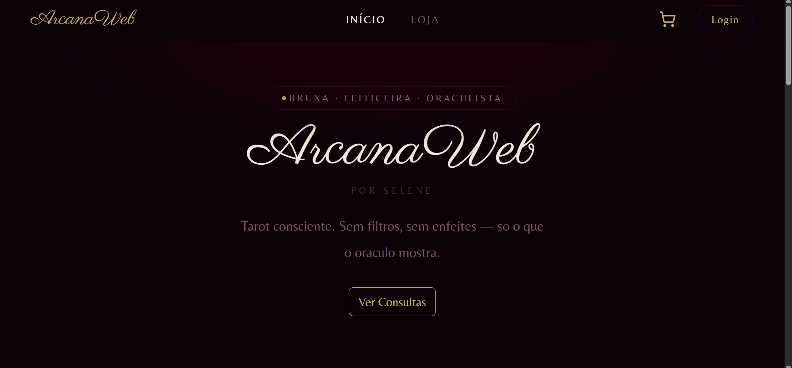

Sobre o Projeto do Terceiro Semestre:
ArcanaWeb
Projeto desenvolvido no terceiro semestre do curso de Análise e Desenvolvimento de Sistemas. Objetivo do sistema: interface web para compra de produtos místicos relacionado a tarot e a magia da natureza, com e-commerce, métodos da cartomante, redirecionamento para o whatsapp da provedora de serviço e agendamento de consultas via interface.
